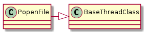

The purpose of the Popen Producer is to provide ways to read from the standard out and standard error without allowing incomplete file outputs to block the execution of the program.
PopenFile(file_object, process, lock[, ...]) |
A container for a process’ readable file-outputs |

Example Use:
def start_ping():
p = PopenProducer("ping localhost")
e = p.stderr
return p.stdout
f = start_ping()
count = 0
for line in f:
print line
if count == 10:
del(f)
print "premature break"
break
count += 1
# now the reason for this whole thing
p = PopenProducer("cat")
f = p.stdout
print "Trying the cat"
for line in f:
print line
del(p)
# now stderr
p = PopenProducer("ping -c")
o = p.stdout
for line in o:
print line
print "checking stderr"
e = p.stderr
for line in e:
print line
del(p)